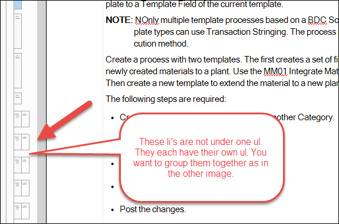
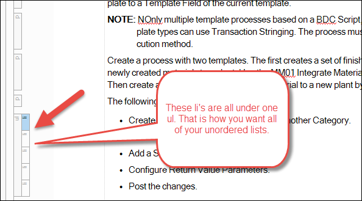
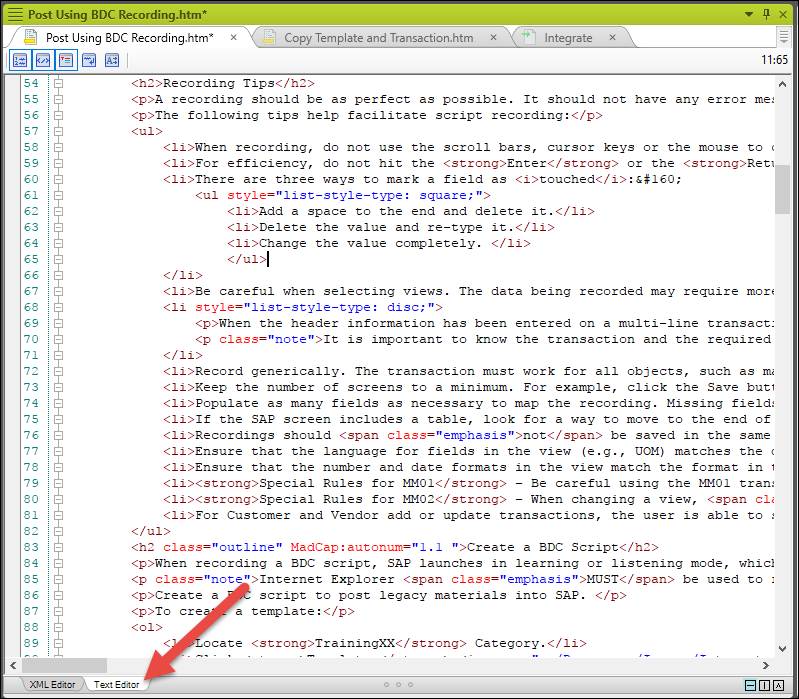
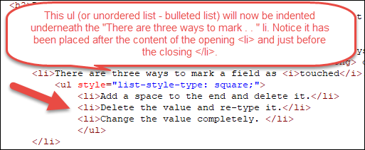

Importing Manuals into Flare
Part 1: Create Flare Project and Add Files
Create a Flare Project
To create a Flare project:
1. Open Flare.
2. Click File from top nav bar and select New Project > New Project to open the New Project Wizard.
3. In the Project name field enter the name for the Flare project. TIP: For example, Training Manuals.
4. Select where you want to store the Flare project using the . . . button to the right of the Project folder field.
5. Click Next.
6. Select Empty from New from template.
7. Click Next.
8. Select your primary target type from the Available Targets list box.
9. Click Finish.
Add Files to Flare
To add stylesheets/page layouts/topics to Flare project:
1. Find the desired stylesheet/page layout in Windows File Exporer and copy the folder.
2. Select the Flare project and open the Content > Resources > Stylesheets folder in Windows File Exporer and paste in your stylesheet.
3. Open the Content > Resources > PageLayouts folder in Windows File Explorer and paste in your page layouts. TIP: Depending on your project you may also want to add the Title, Document History and Table of Contents topics from the Content folder.
TIP: Flare separates table styles into a separate stylesheet and it is assigned its own folder. If you have table styles, separate them from your stylesheet into a new document and paste it into the Tablestyles folder.
4. Open the Flare project.
5. Click Project in the top nav menu.
6. Click Project Properties on the ribbon.
7. Select the main stylesheet you just added in the Master Stylesheet list box.
NOTE: You do not want to add a Master Page Layout because page layout changes based on what is on the page.
Part II: Import Word Files and Map Styles
Import Word File
To import a word file into Flare:
1. Click on the Project Organizer tab.
2. Right-click the Imports folder and select Add MS Word Import File . . .
3. Enter a name for the import in the File Name field.
TIP: For example, Integrate – I would recommend adding the name of the manual here as each content folder will contain topic files for that manual.
4. Click Add.
Map Styles
To map styles in import file in Flare:
1. Uncheck the Link Generated Files to Source Files checkbox at the bottom of the page on the Source Files tab.
IMPORTANT: The reason you are doing this is you don’t want to be connected to the Word document anymore. If you make changes going further, you will make those changes in Flare, not Word.
2. Click the green + icon.
3. Find the Word file you want to import in Windows File Explorer.
4. Click Open.
5. Click the New TopicStyles tab.
6. Select the style you want to separate topics by on the left side.
TIP: For example: I separated the topics by the Exercise style. For a more granular breakup, you can separate topics by more than one style type. The style is often H1 since we want fewer larger topics versus several smaller topics.
IMPORTANT: If you break up your topic by more than one style, you must set up your Outline style and your auto-numbering differently than what is demonstrated in the original steps.
7. Click the arrow pointing right to add the style. You will see it populate the text area after you click.
8. Click the Stylesheet tab.
9. Select the stylesheet you want to use by clicking the Stylesheet button. This is most likely default.css.
10. Find the stylesheet we already pasted into the Stylesheet folder.
11. Click the Don’t Preserve MS Word Styles option under Source Styles.
NOTE: The reason we are not preserving these styles is we are going to convert the Word styles to normal CSS styles. You will not lose all the work you have done to apply styles to your Word document.
12. Click the Paragraph Styles tab.
TIP: On the left side you will see a list of all the MS Word Styles and on the right side you will see a list of the Flare Styles from the stylesheet we selected.
13. Select an MS Word Style on the left and select the corresponding Flare Style on the right.
14. Click the Map button to map the styles.
15. Do this for the remainder of the styles. For multi-level lists, remove the formatting during the import process and re-structure manually in Flare.
|---------------+------------------|
Word Style | Flare Style
|:--------------|:-----------------|
| \[Basic Paragraph\] | p.footertitle |
| Body | p |
| Caption | p.caption |
| Document Title | p.subtitle |
| Exercise | h1.exercise |
| Heading 1 | h1 |
| Heading 2 | h2 |
| Heading 3 | h3 |
| Note | p.note |
| Outline | h2.outline |
| Product Name | p.pagetitle |
| Release Date | p.releasedate |
| TOC 1 | p.TOC1 |
| TOC 2 | p.TOC2 |
| Version Number | p.version |
|---------------+------------------|
NOTE: Make sure you have added the character styles for all bold and italicized words for these styles to be displayed -- *See [Preparing Documents for Importation into Flare][BOADocProcess_PrepareFlareImport] for more information on this step." %}
-
Click the Save All icon in top left corner.
-
Click Import at the top of the page.
-
Click Accept.
NOTE: The Word import process does not maintain in-line formatting (i.e., bold or italics in numbered steps or bullet lists. Use the Flare ribbon to format bullets.
Part III: Organize Content and Clean Up Styles
Organize Content
To organize content:
1. Open the Flare project.
2. Open the folder with the topics you imported from the Word file. It will be named what you named your import file.
3. View your topics and make sure they are divided the way you want them to be divided .
NOTE: When you imported the Word document, you listed the heading levels which would break up the document into topics. Wherever that style was located in the Word document, Flare started a new Topic. However, in some instances, topics were created by default, like files that do not have that style. Flare does a pretty good job here, but you want to go through and make sure all of your content is divided the way you wanted it to be divided. See where each topic begins and ends and if it isn’t to your liking, cut and paste content where it should be and create/delete topics as needed.
3. You will also want to take a look at your images to make sure there are no duplicates.
TIP: You may also want to organize them by type/content sections into different folders. By default Flare names all images by the title of the topic they are in, and then adds numbers, which is not necessarily the best way to organize your images. WARNING: When you do all of this reorganizing, you are changing file paths so Flare will ask you if you want to update the links. Make sure you say yes to that or your images and files will not be connected properly.
Clean up Styles
To clean up styles:
1. Open the first topic in your document.
2. Check to make sure styles have been applied properly by using the cursor to click the text and looking in the Styles panel to see what style has been applied.
NOTE: To open Styles panel, click Home in top nav menu and select Style Window from the ribbon.
3. Specific issues that need addressing:
* Delete Example and Outline numbers – to be replaced with auto styles. The Flare styles already have Exercise and outline numbers as part of the style. So those words/numbers will need to be removed.
TIP: It will seem like all of the Exercises are Exercise 1 in the project. Once the document is produced though these numbers will populate correctly once you have formatted your TOC appropriately.
* Make sure all li’s are contained in a single ol or ul – To make them under one ul or ol, you can do this in the code or you can highlight the entire set of li’s, then click the bullets button on the ribbon 3 times, until they are all under one li.


* Reformat nested lists - since Flare and Word do lists differently, your nested lists may not be formatted properly when they are imported into Flare.
1. Change the bullets to square bullets by highlighting the bulleted items you want to be square bullets and then clicking on the bullet button in the ribbon and selecting the square bullets.
2. Click the Text Editor tab to view the code.

3. Copy the entire ul for the indented li items and paste it within the li tags (between the <li> and </li> tags) they will be indented under.

Notes issues: Again because of the difference in how Word and Flare handle lists your notes will need to be reformatted to look they way they should. To put Note elements between ordered list items within the same li:
1. Place cursor after the period of the last li before the note.
2. Hold down the Control key and click the semicolon key then hit enter key.
3. Either drag and drop the Note into the new space or copy and paste.
4. Make sure there are no extraneous p tags/extra spaces where there should not be.
* Do same thing with images that come in between ordered list items.
* **Remove inline styles** - Inline styles are styles in the code that will directly interfere with the stylesheet's CSS so they need to be removed from the xml.
1. Click the Text Editor tab to display the markup.
2. Look for any elements that have a "style" attribute within them.
3. Remove the style element.
IMPORTANT: There is one exception to this rule -- do not remove the style inserted for the square bullet list items.
Part IV: Update/Clean up the TOC
Updating/ cleaning up the TOC requires two steps. First, you need to link the topics and bookmarks to the headings and subheadings in your TOC. Then you need to set up the auto numbers so that they populate correctly.
Update Links
To link the topics and bookmarks to the headings and subheadings in your TOC:
- Open the TOC by clicking the Project Organizer tab, then opening the TOCs folder.
TIP: There should be two TOCs – one came in with the Word import and the other is a Master TOC that is the default.
- Open the word import TOC by double-clicking it.
TIP: You should see several books listed with the title of the main headings in your import. When you click on the books you will see the subheadings listed.
- Add topics to the TOC in the proper order by clicking on the Content Explorer tab, then selecting the topics and dragging them over to the TOC’s open pane.
- For each main heading/book, you need to link it to a topic. Do this by right-clicking the book and selecting Link to Topic. Then select the topic that corresponds to the book title. Do this for all of the books.
- Then you need to add bookmarks for the subheadings in a similar manner. Do this by right-clicking the subheading and selecting Properties. In the Properties window, select the General tab. In the General tab, click the Select Bookmark icon to select a bookmark. You must do this for all of the subheadings.
Update Autonumbering
To set up the auto numbers so that they populate correctly:
NOTE: “If you set up your topics to be separated by more than one style, see section To set up auto numbers so that they populate correctly for granular topics.
-
Open Flare project.
-
Click the Project Organizer tab.
-
Open the TOCs folder.
-
Open the TOC for your document.
-
Right-click the Title page on the TOC and select Properties.
-
In the properties window, select the Printed Output tab.
-
For the Title page: * Create a break by selecting Chapter Break from the Break Type list box. TIP: The reason you are creating a break here is two-fold
-
It lets you select the proper page layout because you have a specific one in mind for this page
-
It allows you to select the page number type even though it won’t show up on this page as it is not part of the title page layout, it will begin the counting here.
-
Select the **Cover** page layout from the **Page Layout** list box. * Select **Title** from the **Page Type** list box.
-
Leave Chapter File Name as (default).
-
Select Disabled from the Auto-end on 'left' page list box.
-
Select Reset to in the Page Number section of the window.
-
Enter an 'i' in the text box and select roman(I, ii, iii) from the Format list box.
NOTE: "This is where you are setting up the type of numbers you want for the remainder of your front pages.
-
- For the Document History page:
- Create a break by selecting Page Layout Break from the Break Type list box.NOTE: “The reason this is a page layout break and not a chapter break is that we want the numbering to continue here and not restart.
- Select the /title page layout from the Page Layout list box.
- Select First from the Page Type list box.
- Select Disabled from the Auto-end on ‘left’ page list box. NOTE: The default for the page numbering is for it to increment, which you want at this point so you do not need to specify the page number type here.
- For the Table of Contents page:
- Create a break by selecting Page Layout Break from the Break Type list box. NOTE: The reason this is a page layout break and not a chapter break is that we want the numbering to continue here and not restart.
- Select the /TableOfContents page layout from the Page Layout list box.
- Select First from the Page Type list box.
- Select Disabled from the Auto-end on ‘left’ page list box. NOTE: The default for the page numbering is for it to increment, which you want at this point so you do not need to specify the page number type here.
- For the first book/topic/heading:
- Create a break by selecting Chapter Break from the Break Type list box. {% include note.html content=“You are selecting a Chapter Break here because you want a different kind of numbering here so you need to reset it. Also, you need to set it up so that your Exercise and Outline numbers will also start to increment after this and so we need to count it as a Chapter.” %}
- Select the /title page layout from the Page Layout list box.
- Select Normal from the Page Type list box.
- Leave Chapter File Name as (default).
- Select Disabled from the Auto-end on ‘left’ page list box.
- Select Reset to in the Page Number section of the window.
- Enter an ‘1’ in the text box and select decimal (1, 2, 3) from the Format list box.
- Click on the Auto-Numbers tab.
- Select Reset to for Chapter Number.
- Enter a ‘1’ in the text box and select decimal(1, 2, 3) from the Format list box.
- For all subsequent books/topics/headings:
- Create a break by selecting Chapter Break from the Break Type list box. {% include note.html content=“The reason you need a Chapter break here is so that the Exercise and Outline numbers will now increment as the next chapter.” %}
- Select the /title page layout from the Page Layout list box.
- Select Normal from the Page Type list box.
- Leave Chapter File Name as (default).
- Select Disabled from the Auto-end on ‘left’ page list box.
- Select Increment number for the Page Number section.
- Click on the Auto-Numbers tab.
- Select Increment number for the Chapter Number.
- You want these to increment so that all of your Exercises and Outline numbers are not 1.
Update AutoNumbering - Granular Topics
To set up auto numbers so that they populate correctly for granular topics:
- Open Flare project.
- Click the Project Organizer tab.
- Open the TOCs folder.
- Open the TOC for your document.
- Right-click the Title page on the TOC and select Properties.
- In the Properties window, select the Printed Output tab.
- For the Title page:
- Create a break by selecting Chapter Break from the Break Type list box. NOTE: The reason you are creating a break here is two-fold: 1. It lets you select the proper page layout because you have a specific one in mind for this page. 2. It allows you to select the page number type even though it won’t show up on this page as it is not part of the title page layout, it will begin the counting here.
- Select the /Cover page layout from the Page Layout list box.
- Select Title from the Page Type list box.
- Leave Chapter File Name as (default).
- Select Disabled from the Auto-end on ‘left’ page list box.
- Select Reset to in the Page Number section of the window.
- Enter an ‘i’ in the text box and select roman(I, ii, iii) from the Format list box. NOTE: This is where you are setting up the type of numbers you want for the remainder of your front pages.
- For the Document History page:
- Create a break by selecting Page Layout Break from the Break Type list box. NOTE: The reason this is a page layout break and not a chapter break is that we want the numbering to continue here and not restart.
- Select the /title page layout from the Page Layout list box.
- Select First from the Page Type list box.
- Select Disabled from the Auto-end on ‘left’ page list box.
NOTE: The default for the page numbering is for it to increment, which you want at this point so you do not need to specify the page number type here.
- For the Table of Contents page:
- Create a break by selecting Page Layout Break from the Break Type list box.
- NOTE: The reason this is a page layout break and not a chapter break is that we want the numbering to continue here and not restart.
- Select the /TableOfContents page layout from the Page Layout list box.
- Select First from the Page Type list box.
- Select Disabled from the Auto-end on ‘left’ page list box.
NOTE: The default for the page numbering is for it to increment, which you want at this point so you do not need to specify the page number type here.
- For the Exercise headings:
- Create a break by selecting Chapter Break from the Break Type list box.
- Select the /title page layout from the Page Layout list box.
- Select Normal from the Page Type list box.
- Leave Chapter File Name as (default).
- Select Disabled from the Auto-end on ‘left’ page list box.
- Select Reset to in the Page Number section of the window.
- Enter a ‘1’ in the text box and select decimal (1, 2, 3) from the Format list box.
- Click on the Auto-Numbers tab.
- Select Reset to for Chapter Number.
- Enter a ‘1’ in the text box and select decimal (1, 2, 3) from the Format list box.
- For the Outline_1 headings - Ensure none is selected in the Break Type list box.
- For the first topic (For example. 1.1, 2.1, 3.1) in Outline headings:
- Create a break by selecting Page Layout Break from the Break Type list box.
- Select the /title page layout from the Page Layout list box.
- Select Normal from the Page Type list box.
- Leave Chapter File Name as (default).
- Select Disabled from the Auto-end on ‘left’ page list box.
- Leave Page Number set to Increment number.
- Check the Start a new section check box in the Section Break area of the window.
- Leave the list box selection as (default).
- Click on the Auto-Numbers tab.
- Click Reset to for Chapter Number.
- Enter a ‘1’ in the text box and select decimal (1, 2, 3) from the Format list box.
- Click Reset to for Section Number
- Enter a ‘1’ in the text box and select decimal (1, 2, 3) from the Format list box.
- For subsequent Outline headings (For example. 1.2, 1.3, 2.2, 2.3):
- Create a break by selecting Page Layout Break from the Break Type list box.
- Select the /title page layout from the Page Layout list box.
- Select Normal from the Page Type list box.
- Leave Chapter File Name as (default).
- Select Disabled from the Auto-end on ‘left’ page list box.
- Leave Page Number set to Increment number.
- Check the Start a new section check box in the Section Break area of the window.
- Leave the list box selection as (default).
- Click on the Auto-Numbers tab.
- Leave Chapter Number set to Increment.
- Leave Chapter Number set to Increment.
NOTE: The values in the Auto-Numbers tab are automatic and you shouldn’t need to change anything; however, if the auto-numbering is not populating correctly, you may need to ensure this tab displays these settings.
Part V: Set up the Target
To set up the target:
- Click the Project Organizer tab.
- Open the Targets folder.
- Double-click the PDF target if it is there, if not create one by right-clicking the Target folder and selecting Add Target.
- Click the General tab.
- Select PDF for Output Type if not already selected.
- Select your TOC in the Master TOC list box.
- Leave the Master Page Layout as (default).
NOTE: You set up the appropriate layouts in the TOC already. If you select something else here it will override what you have already entered. Not all of your layouts will be the same.
- Select your stylesheet from the Master Stylesheet list box.
- Do not worry about the rest of the inputs here.
- Select the Variables tab.
NOTE: The Variables tab will input the variables inserted on the title page with whatever inputs you put here. This way you can use the same Title page layout for many different documents, but just create new targets for them.
- Enter the Product Name into the text box.
- Enter the Release Date into the text box.
- Enter the Version number into the text box.
- Click the Advanced tab.
- Uncheck the Generate TOC Proxy, Generate Index Proxy, and Generate Glossary Proxy checkboxes
NOTE: You don’t need Flare to create these because we have already created them and put them into our TOC. If we do not uncheck these boxes you will end up with multiple.
- Check the Use TOC depth for heading levels checkbox.
- Click the Save button.
- Click View at the top of the target window to create the PDF.
- Click Yes to generate the output.
- Once created you can rename and save your PDF where you need it.